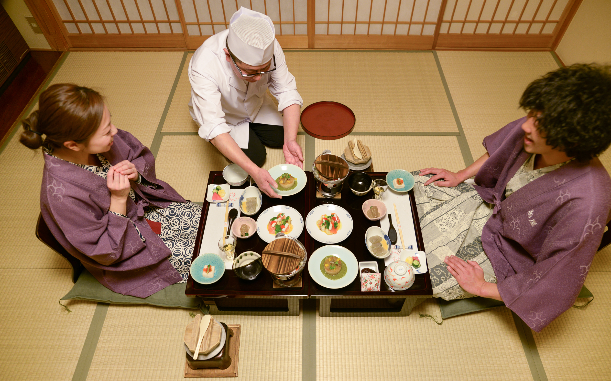
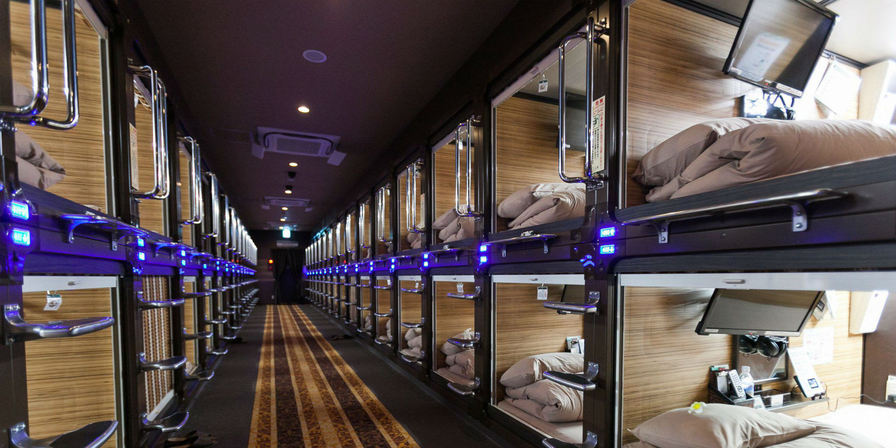
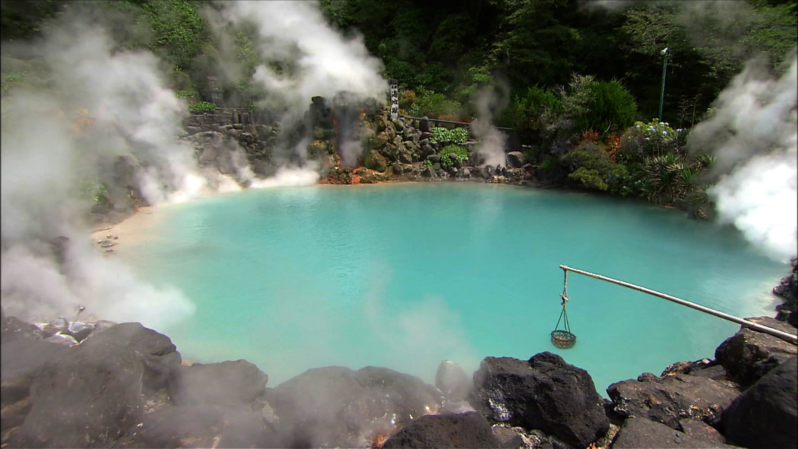
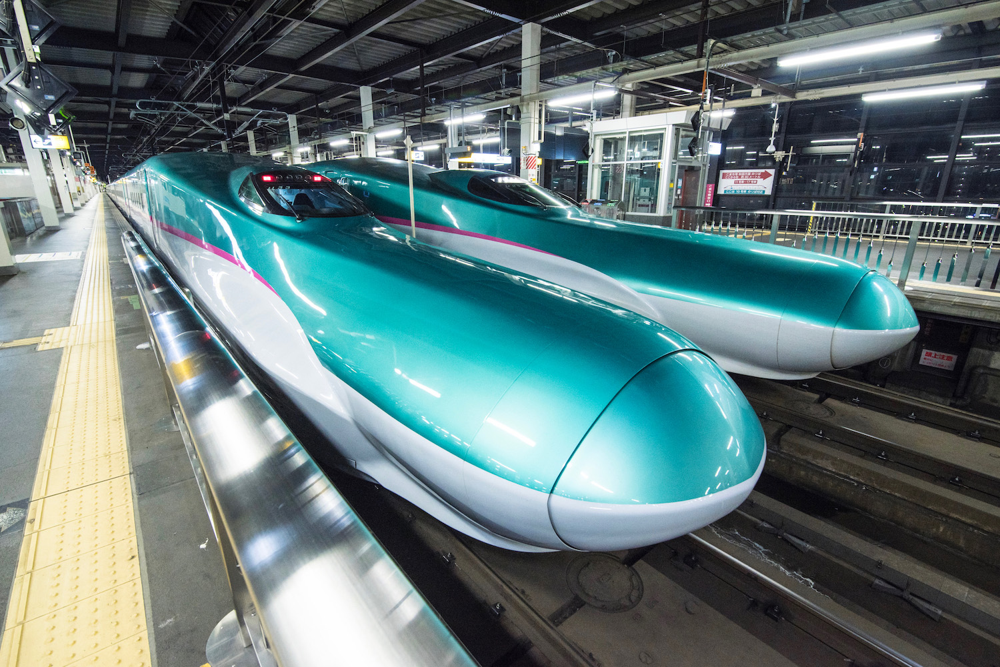

Japan's Travel Industry
As Japan modernized through the 20th Century, many new forms of travel developed while also maintaining centuries old traditions.
On this page, you can discover some of the many unique ways to enjoy your stay in Japan.
Accomodation
Ryokans

Ryokans are a style of hotel that originates in Japan. They follow traditional Japanese customs including style, architecture, and service. In the traditional way most things are done on the floor including sleeping and eating. However, at a ryokan, servers will come to your room to prepare your meals and wait on you while you dine.
Capsule Hotels

Another uniquely Japanese style of hotel is the capsule hotel. These bare bones hotels offer guests a small body length room in which to sleep. Perfect for travelers on a budget or those simply wanting the experience. Click the image above to see some of the different varieties of capsule hotels in Tokyo.
Onsens

Due to Japan's geography and the plethora of volcanic systems in the area, Japan is home to thousands of hot springs. Japanese love to bathe in the hot springs, or 'onsen', year-round. Similar to ryokans, onsens have hot springs located on the premises. Some have larger public onsens, while many offer private onsens outside the hotel room.
Transportation
Airports
Japan has several world class international airports that make traveling to Japan and within it a breeze. The airports listed below have daily flights to most countries as well as connecting domestic flights that take you to anywhere in Japan.
Tokyo
Haneda (HND) - This airport is located in the southern district of Tokyo with commuter rail connecting it to every district in the city.
Narita (NRT) - The newest airport serving Tokyo, Narita is actually located in Chiba Prefecture to the east of Tokyo with a designated rail line connected the airport to downtown Tokyo. Despite being further outside the city, Narita receives more flights than Haneda.
Osaka
Kansai (KIX) - Kansai International is the largest airport in the country outside of Tokyo and serves as the main hub for the Osaka-Kyoto-Kobe region of Western Japan.
Rail
Shinkansen Bullet Train

Likely Japan's most famous mode of transportation, the Shinkansen is a modern marvel. Also called the bullet train in English, the Shinkansen has several lines across the country. Reaching speeds of 200 mph, the train can take you from Tokyo to Osaka in under 3 hours. Despite going 200 mph, many first time travellers don't even realize the train is moving due to the smooth ride. Follow the image link above for information on tickets